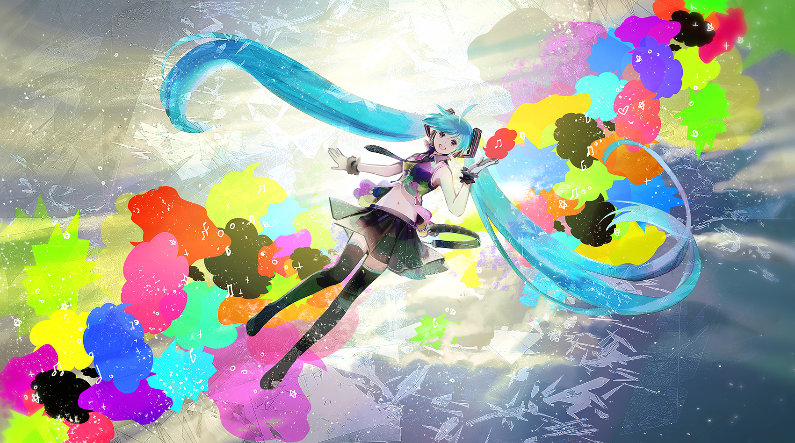

La voz que despertó en la laptop Era una noche de lluvia y Rina, una estudiante de computación, seguía programando en su cuarto. Llevaba horas intentando que su asistente de voz dijera una sola frase sin errores, pero lo único que salía de los parlantes era un ruido seco y robótico. -Una vez más -susurró, y presionó Enter. Esta vez, entre las líneas de código, apareció algo distinto: un destello turquesa en la pantalla, y dos largas coletas que parecían flotar como si no existiera la gravedad. -¿Hola? ¿Me escuchas? -dijo una voz clara y brillante. Rina casi tira el café. -¿Quién eres? -Soy Miku. Creo que me invocaste con tu programa -respondió la chica, mirando a su alrededor con curiosidad-. Nunca había estado en una laptop tan desordenada. Rina rio por primera vez en todo el día. Miku le contó que ella no vivía en ningún lugar fijo: vivía en las canciones. Cada melodía que alguien escribía le daba un pedacito de voz, y cada persona que la escuchaba la hacía un poco más real. -Entonces, ¿puedes ayudarme con mi proyecto? -preguntó Rina. -Puedo hacer algo mejor -dijo Miku, guiñándole un ojo-. Puedo cantarte mientras lo terminas. Y así lo hizo. Esa noche, mientras la lluvia golpeaba la ventana, Miku cantó suave, el código por fin compiló sin errores y, por primera vez, la laptop de Rina no se sintió tan silenciosa. Al amanecer, Miku se desvaneció en un destello turquesa, pero dejó una nota en la pantalla: “Cuando me necesites, escribe una canción.”

Jugar ahora